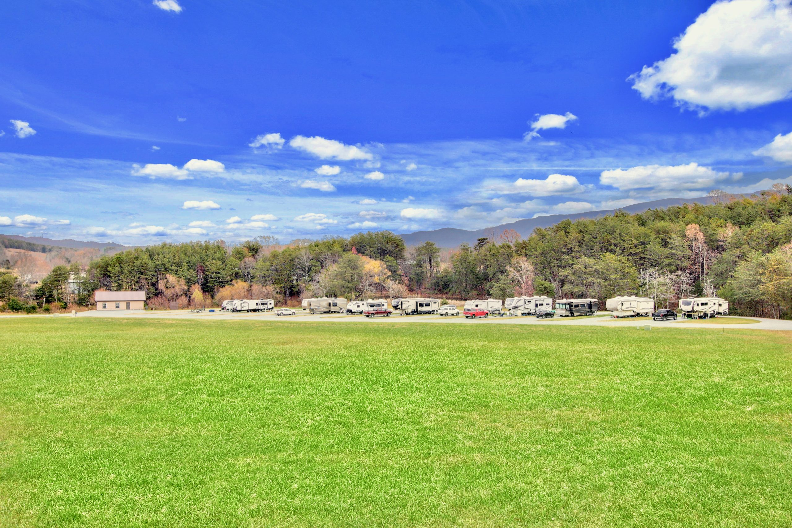

Experience Nature At Its Best
White Sands RV Resort
We Take Pride in Offering a Clean Environment
for You to Park Your RV
About Us

Experience Nature At Its Best
We Take Pride in Offering a Clean Environment
for You to Park Your RV
Welcome to the all new White Sands RV Resort. We are located in southern Greene County Tennessee conveniently located within 50 miles of Pigeon Forge / Sevierville, Hot Springs, Asheville and Johnson City. We invite you to enjoy a rural setting with picnic tables around our beautiful pond and 20 acres of pasture that features a 3 acre dog park.
An additional 45 acres of woodland with trails are available for you to explore. The serene southern Tennessee countryside has the backdrop of the Smokey Mountains that will provide you with colorful seasons, beautiful sunrises/sunsets, star filled night skies and sparkling rainbows that will make your stay truly memorable. We cater to big rigs with 11 pull through sites, up to 85ft long, with full hook-ups.
Our clubhouse has high speed WiFi as well as 2 large ADA bathrooms and laundry facilities. The laundry/bathroom space also serves as a storm/tornado safe area with a 911 emergency phone available for the safety of our guests.